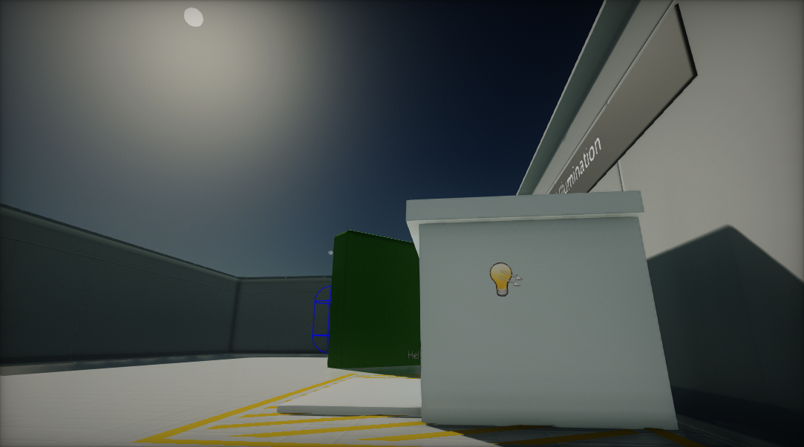
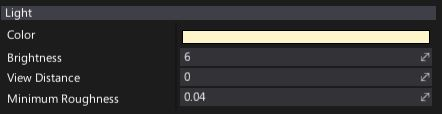
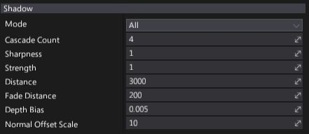
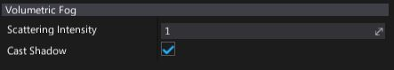

Directional Light

Directional Light emits light uniformly from a single direction. Directional Lights are useful for simulating large, distant light sources such as the sun.
Light Properties

| Property | Description |
|---|---|
| Color | Light emission color. |
| Brightness | Light brightness parameter. Controls intensity of the light emitted by this actor. |
| View Distance | Controls light visibility range. The distance at which the light be completely faded. Use value 0 to always draw a light. |
| Minimum Roughness | Controls the minimum roughness value used to clamp material surface roughness during shading. Can help with softening specular highlights. |
Shadow Properties

| Property | Description | ||||||||||
|---|---|---|---|---|---|---|---|---|---|---|---|
| Mode | Describes how visual element casts shadows. Possible options:
|
||||||||||
| Cascade Count | The number of cascades used for slicing the range of depth covered by the light during rendering shadows. Values are 1, 2 or 4 cascades; a typical scene uses 4 cascades. | ||||||||||
| Sharpness | Controls shadows sharpness. Can be used to tweak the penumbra width. | ||||||||||
| Strength | Controls dynamic shadows blending strength. Default is 1 for fully opaque shadows, value 0 disables shadows. | ||||||||||
| Distance | Light shadows rendering distance (in world units). | ||||||||||
| Fade Distance | Light shadows fade off distance (in world units). | ||||||||||
| Depth Bias | Controls dynamic shadows depth bias value. Depth bias used for shadow map comparison. | ||||||||||
| Normal Offset Scale | Controls dynamic shadows normal vector offset scale. A factor specifying the offset to add to the calculated shadow map depth with respect to the surface normal. | ||||||||||
| Contact Shadows Length | The length of the rays for contact shadows computed via the screen-space tracing. Set this to values higher than 0 to enable screen-space shadows rendering for this light. This improves the shadowing details. Actual ray distance is based on the pixel distance from the camera. |
Note
To learn more about shadows in Flax see this page.
Volumetric Fog Properties

| Property | Description |
|---|---|
| Scattering Intensity | Controls how much this light will contribute to the Volumetric Fog. When set to 0, there is no contribution. |
| Cast Shadow | If checked, light will cast a volumetric shadow to Volumetric Fog. Also shadows casting by this light should be enabled in order to make it cast volumetric fog shadow. |
Note
To learn more about Volumetric Fog effect see this page.